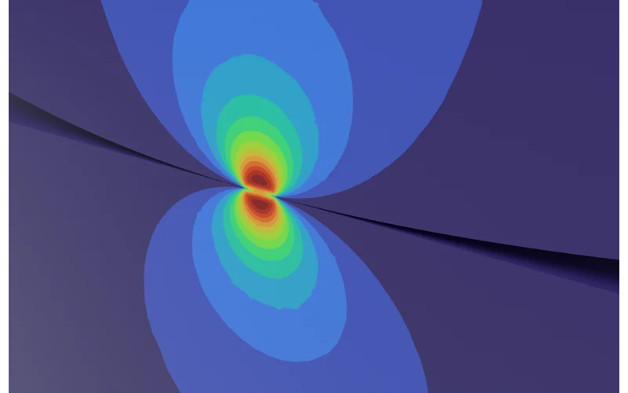
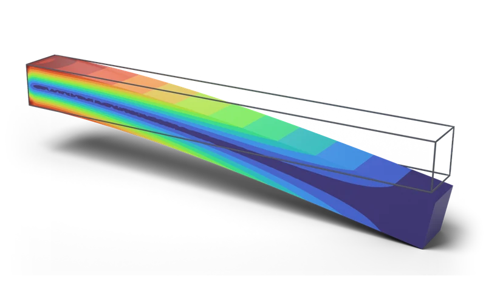
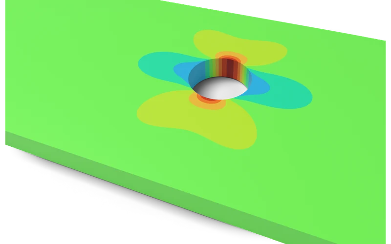
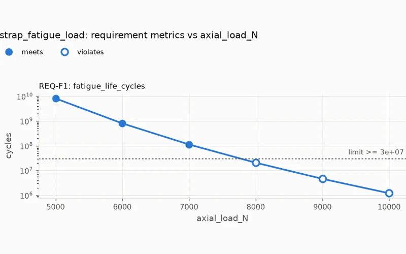
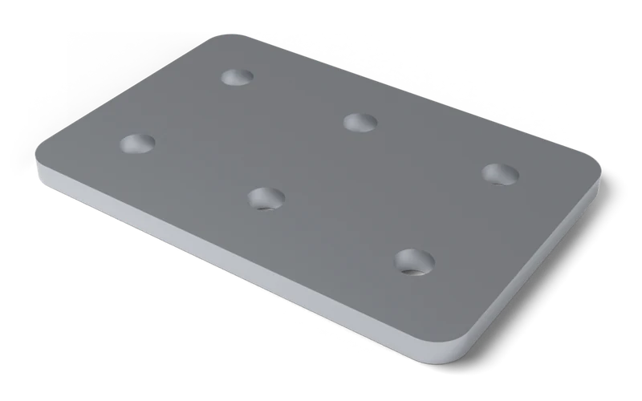

<title>Verified Simulation Portfolio</title>
<meta name="claude:viewport-fit-sides" content="cover">
<link rel="preconnect" href="https://fonts.googleapis.com">
<link rel="preconnect" href="https://fonts.gstatic.com" crossorigin>
<link rel="stylesheet" href="https://fonts.googleapis.com/css2?family=Archivo:wdth,wght@62..125,400..800&family=JetBrains+Mono:wght@400;500&family=Source+Sans+3:ital,wght@0,400;0,600;1,400&display=swap">
<style>
/* Layout: a solver viewport opens the page (real renders, legends in the CAE convention, the render checks as the status line); then the task loop, the agent's procedures, a filterable case gallery, findings, and the full study sheets at the same 1180px width as the rest (body text still capped near 70ch). */
:root {
  --bg: #eef1f5;
  --surface: #ffffff;
  --ink: #0e1621;
  --ink-2: #4a5766;
  --ink-3: #788596;
  --rule: #d5dce5;
  --accent: #2346c4;
  --accent-soft: #e4e9fb;
  --hot: #c9461a;
  --pass: #157447; --pass-bg: #e0f1e7;
  --fail: #b0381a; --fail-bg: #fbe6df;
  --warn: #855f00; --warn-bg: #f9efd6;
  --plate: #fcfcfb;
  --vp-top: #121d33; --vp-bot: #5a7193; --vp-ink: #edf1f8; --vp-ink-2: #b4c1d6; --vp-line: rgba(237, 241, 248, 0.16);
  --term-bg: #0f1620; --term-ink: #d9e1ea; --term-dim: #7f8c9d; --term-pass: #7fd6a2; --term-fail: #ff9b7b; --term-line: #223042;
  --font-display: "Archivo", "Arial Narrow", system-ui, sans-serif;
  --font-body: "Source Sans 3", "Segoe UI", system-ui, -apple-system, sans-serif;
  --font-data: "JetBrains Mono", ui-monospace, "Cascadia Mono", Consolas, monospace;
  --radius: 4px;
}
@media (prefers-color-scheme: dark) {
  :root:not([data-theme="light"]) {
    --bg: #0b1016; --surface: #121a24; --ink: #e8edf3; --ink-2: #a2b0bf; --ink-3: #6e7c8c; --rule: #233041;
    --accent: #8fa9ff; --accent-soft: #1b2645; --hot: #ff8d5f;
    --pass: #7fd6a2; --pass-bg: #14301f; --fail: #ff9b7b; --fail-bg: #3a1e16; --warn: #e9c46a; --warn-bg: #33290f;
    color-scheme: dark;
  }
}
:root[data-theme="dark"] {
  --bg: #0b1016; --surface: #121a24; --ink: #e8edf3; --ink-2: #a2b0bf; --ink-3: #6e7c8c; --rule: #233041;
  --accent: #8fa9ff; --accent-soft: #1b2645; --hot: #ff8d5f;
  --pass: #7fd6a2; --pass-bg: #14301f; --fail: #ff9b7b; --fail-bg: #3a1e16; --warn: #e9c46a; --warn-bg: #33290f;
  color-scheme: dark;
}

* { box-sizing: border-box; }
html { scroll-behavior: smooth; }
@media (prefers-reduced-motion: reduce) { html { scroll-behavior: auto; } *, *::before, *::after { transition: none !important; animation: none !important; } }
body {
  background: var(--bg); color: var(--ink);
  font-family: var(--font-body); font-size: 17px; line-height: 1.6;
  padding-left: max(16px, env(safe-area-inset-left, 0px));
  padding-right: max(16px, env(safe-area-inset-right, 0px));
  padding-block: 0 72px;
}
body::before { content: ""; position: fixed; inset: 0 0 auto; height: env(safe-area-inset-top, 0px); z-index: 10; background: var(--bg); }
.wrap { max-width: 1180px; margin-inline: auto; }
.read { max-width: 820px; margin-inline: auto; }
h1, h2, h3 { font-family: var(--font-display); text-wrap: balance; margin: 0; line-height: 1.1; }
p { margin: 0; }
a { color: var(--accent); text-underline-offset: 3px; }
:focus-visible { outline: 2px solid var(--accent); outline-offset: 3px; border-radius: 2px; }
.eyebrow, .label {
  font-family: var(--font-data); font-size: 0.74rem; letter-spacing: 0.1em; text-transform: uppercase; color: var(--ink-2);
}
code { font-family: var(--font-data); font-size: 0.85em; }

/* ------------------------------------------------------------- top bar */
.topbar {
  position: sticky; top: env(safe-area-inset-top, 0px); z-index: 9;
  background: color-mix(in srgb, var(--bg) 88%, transparent);
  backdrop-filter: blur(10px); -webkit-backdrop-filter: blur(10px);
  border-bottom: 1px solid var(--rule);
  margin-left: calc(-1 * max(16px, env(safe-area-inset-left, 0px)));
  margin-right: calc(-1 * max(16px, env(safe-area-inset-right, 0px)));
  padding-left: max(16px, env(safe-area-inset-left, 0px));
  padding-right: max(16px, env(safe-area-inset-right, 0px));
}
.topbar .wrap { display: flex; align-items: center; justify-content: space-between; gap: 16px; min-height: 52px; }
.brand { font-family: var(--font-display); font-weight: 700; font-stretch: 110%; font-size: 0.98rem; letter-spacing: 0.01em; color: var(--ink); text-decoration: none; display: flex; align-items: center; gap: 10px; white-space: nowrap; }
.brand-mark { width: 22px; height: 12px; display: grid; grid-template-columns: repeat(6, 1fr); border-radius: 2px; overflow: hidden; }
.brand-mark i { display: block; }
.topnav { display: flex; gap: 4px; overflow-x: auto; scrollbar-width: none; }
.topnav a { font-size: 0.9rem; color: var(--ink-2); text-decoration: none; padding: 6px 10px; border-radius: var(--radius); white-space: nowrap; }
.topnav a:hover { color: var(--ink); background: var(--accent-soft); }
@media (max-width: 640px) { .topnav a:nth-child(n+3) { display: none; } }

/* ------------------------------------------------------------- hero */
.hero { padding-block: clamp(32px, 5vw, 64px) 28px; display: grid; grid-template-columns: minmax(0, 1fr) auto; gap: 22px 56px; align-items: end; }
.hero-text { display: grid; gap: 20px; min-width: 0; }
@media (max-width: 900px) { .hero { grid-template-columns: 1fr; } }
.hero h1 {
  font-size: clamp(2.5rem, 6.4vw, 5rem); font-weight: 800; font-stretch: 112%;
  letter-spacing: -0.025em; line-height: 0.98; max-width: 14ch;
}
.hero h1 em { font-style: normal; color: var(--accent); }
.lede { font-size: clamp(1.08rem, 1.6vw, 1.28rem); color: var(--ink-2); max-width: 62ch; line-height: 1.55; }
.lede b { color: var(--ink); font-weight: 600; }
.stats { display: grid; grid-template-columns: repeat(2, auto); gap: 18px 40px; margin: 0; padding: 0 0 6px; }
@media (max-width: 900px) { .stats { grid-template-columns: repeat(4, auto); justify-content: start; } }
@media (max-width: 560px) { .stats { grid-template-columns: repeat(2, auto); } }
.stats div { display: grid; gap: 0; }
.stats dt { order: 2; font-family: var(--font-data); font-size: 0.72rem; letter-spacing: 0.08em; text-transform: uppercase; color: var(--ink-3); }
.stats dd { order: 1; margin: 0; font-family: var(--font-display); font-weight: 800; font-stretch: 110%; font-size: clamp(1.7rem, 3vw, 2.6rem); font-variant-numeric: tabular-nums; line-height: 1.2; }

/* ------------------------------------------------------------- viewport */
.viewport { display: grid; gap: 12px; }
.vp {
  position: relative; border-radius: 6px; overflow: hidden; color: var(--vp-ink);
  background: linear-gradient(180deg, var(--vp-top) 0%, var(--vp-bot) 100%);
  box-shadow: 0 1px 0 rgba(255,255,255,0.06) inset, 0 24px 48px -28px rgba(10, 20, 40, 0.55);
  display: grid; grid-template-columns: 190px minmax(0, 1fr); grid-template-rows: minmax(0, 1fr) auto;
  min-height: clamp(360px, 52vw, 620px);
}
.vp::after { /* faint viewport grid */
  content: ""; position: absolute; inset: 0; pointer-events: none;
  background-image: linear-gradient(var(--vp-line) 1px, transparent 1px), linear-gradient(90deg, var(--vp-line) 1px, transparent 1px);
  background-size: 64px 64px; opacity: 0.18; mask-image: linear-gradient(180deg, transparent, #000 30%, #000 70%, transparent);
}
.legend { padding: 20px 0 16px 20px; display: grid; align-content: start; gap: 10px; position: relative; z-index: 1; }
.legend-title { font-family: var(--font-data); font-size: 0.8rem; line-height: 1.35; }
.legend-title small { display: block; color: var(--vp-ink-2); font-size: 0.72rem; }
.legend-body { display: grid; grid-template-columns: 22px auto; gap: 8px; }
.swatches { display: grid; border: 1px solid rgba(255,255,255,0.35); }
.swatches i { display: block; height: clamp(14px, 1.7vw, 19px); transition: transform 0.45s cubic-bezier(.2,.7,.2,1); transform-origin: left; }
.vp.switching .swatches i { transform: scaleX(0.55); }
.ticks { position: relative; font-family: var(--font-data); font-size: 0.7rem; color: var(--vp-ink); font-variant-numeric: tabular-nums; min-width: 9ch; }
.ticks span { position: absolute; left: 0; transform: translateY(-50%); white-space: nowrap; }
.stage { position: relative; z-index: 1; display: grid; place-items: center; padding: 20px 28px 8px 8px; min-width: 0; }
.stage img { max-width: 100%; max-height: clamp(280px, 44vw, 520px); width: auto; height: auto; transition: opacity 0.35s ease, transform 0.5s cubic-bezier(.2,.7,.2,1); filter: drop-shadow(0 18px 24px rgba(0, 8, 20, 0.35)); }
.vp.switching .stage img { opacity: 0; transform: translateY(6px) scale(0.985); }
.triad { position: absolute; left: 4px; bottom: 6px; width: 54px; height: 54px; opacity: 0.85; }
.status {
  grid-column: 1 / -1; position: relative; z-index: 1;
  font-family: var(--font-data); font-size: 0.74rem; line-height: 1.6; color: var(--vp-ink-2);
  padding: 10px 20px 14px; border-top: 1px solid var(--vp-line); background: rgba(8, 14, 26, 0.28);
  display: grid; gap: 1px;
}
.status b { color: var(--vp-ink); font-weight: 500; }
.status .chk { color: #9fe3b9; }
.tabs { display: grid; grid-template-columns: repeat(6, minmax(0, 1fr)); gap: 8px; }
@media (max-width: 1100px) { .tabs { grid-template-columns: repeat(3, minmax(0, 1fr)); } }
.tabs button {
  font: inherit; text-align: left; cursor: pointer; display: grid; gap: 2px; min-width: 0;
  padding: 10px 14px; border-radius: var(--radius); border: 1px solid var(--rule); background: var(--surface); color: var(--ink);
}
.tabs button:hover { border-color: var(--accent); }
.tabs button[aria-selected="true"] { border-color: var(--accent); box-shadow: inset 0 -3px 0 var(--accent); }
.tab-k { font-family: var(--font-data); font-size: 0.7rem; letter-spacing: 0.1em; text-transform: uppercase; color: var(--accent); }
.tab-v { font-size: 0.92rem; font-weight: 600; overflow: hidden; text-overflow: ellipsis; white-space: nowrap; }
.vp-note { font-size: 0.9rem; color: var(--ink-2); max-width: 80ch; }
@media (max-width: 720px) {
  .vp { grid-template-columns: 1fr; grid-template-rows: auto minmax(0, 1fr) auto; min-height: 0; }
  .legend { padding: 16px 16px 0; }
  .legend-body { grid-template-columns: 1fr; gap: 4px; }
  .swatches { grid-auto-flow: column; grid-auto-columns: 1fr; direction: rtl; }
  .swatches i { height: 12px; }
  .ticks { height: 1.1em; }
  .ticks span { transform: none; }
  .ticks span:not(:first-child):not(:last-child) { display: none; }
  .ticks span:first-child { left: auto; right: 0; top: 0 !important; }
  .ticks span:last-child { left: 0; top: 0 !important; }
  .stage { padding: 8px 12px 12px; }
  .stage img { max-height: 300px; }
  .triad { display: none; }
  .tabs { grid-template-columns: repeat(2, minmax(0, 1fr)); }
}

/* ------------------------------------------------------------- sections */
.band { padding-block: clamp(56px, 8vw, 104px) 0; display: grid; gap: 28px; scroll-margin-top: 64px; }
.band-head { display: grid; gap: 10px; max-width: 760px; }
.band-head h2 { font-size: clamp(1.9rem, 3.6vw, 2.8rem); font-weight: 750; font-stretch: 108%; letter-spacing: -0.015em; }
.band-head p { color: var(--ink-2); font-size: 1.06rem; max-width: 64ch; }

/* task loop */
.loop { display: grid; grid-template-columns: minmax(0, 1fr) minmax(0, 1.1fr); gap: 28px; align-items: start; }
.steps { list-style: none; margin: 0; padding: 0; display: grid; gap: 0; counter-reset: step; border-top: 1px solid var(--rule); }
.steps li { display: grid; grid-template-columns: 3rem minmax(0, 1fr); gap: 4px 12px; padding: 16px 0; border-bottom: 1px solid var(--rule); }
.steps li::before { counter-increment: step; content: counter(step, decimal-leading-zero); grid-row: span 2; font-family: var(--font-data); font-size: 0.85rem; color: var(--accent); padding-top: 4px; }
.steps b { font-family: var(--font-display); font-size: 1.18rem; font-weight: 700; font-stretch: 105%; }
.steps span { color: var(--ink-2); font-size: 0.98rem; }
.term { background: var(--term-bg); color: var(--term-ink); border-radius: 6px; overflow: hidden; font-family: var(--font-data); font-size: 0.8rem; line-height: 1.7; border: 1px solid var(--term-line); }
.term-bar { display: flex; align-items: center; gap: 7px; padding: 10px 14px; border-bottom: 1px solid var(--term-line); color: var(--term-dim); }
.term-bar i { width: 9px; height: 9px; border-radius: 50%; background: var(--term-line); display: inline-block; }
.term-bar span { margin-left: 8px; overflow: hidden; text-overflow: ellipsis; white-space: nowrap; }
.term pre { margin: 0; padding: 14px 16px 16px; overflow-x: auto; white-space: pre; }
.term .p { color: var(--term-dim); }
.t-row { display: block; }
.t-row > span { display: inline-block; }
.t-id { width: 27ch; } .t-pass, .t-fail { width: 6ch; } .t-num { width: 11ch; }
.t-id { color: var(--term-ink); }
.t-pass { color: var(--term-pass); }
.t-fail { color: var(--term-fail); }
.t-num, .t-tol { color: var(--term-dim); font-variant-numeric: tabular-nums; }
.term .verdict { color: var(--term-fail); }
.term .ok { color: var(--term-pass); }
@media (max-width: 860px) { .loop { grid-template-columns: 1fr; } }

/* agent skills */
.skills { display: grid; grid-template-columns: repeat(3, minmax(0, 1fr)); gap: 1px; background: var(--rule); border: 1px solid var(--rule); border-radius: 6px; overflow: hidden; }
.skill { background: var(--surface); padding: 18px 20px; display: grid; gap: 6px; align-content: start; min-width: 0; }
.skill code { font-size: 0.82rem; color: var(--accent); }
.skill b { font-family: var(--font-display); font-weight: 700; font-size: 1.08rem; }
.skill p { color: var(--ink-2); font-size: 0.95rem; }
.rules { display: flex; flex-wrap: wrap; gap: 8px 10px; list-style: none; margin: 0; padding: 0; }
.rules li { font-size: 0.92rem; padding: 6px 12px; border: 1px solid var(--rule); border-radius: 999px; background: var(--surface); }
.rules li::before { content: "✓"; color: var(--pass); margin-right: 8px; font-weight: 600; }
@media (max-width: 900px) { .skills { grid-template-columns: repeat(2, minmax(0, 1fr)); } }
@media (max-width: 560px) { .skills { grid-template-columns: 1fr; } }

/* gallery */
.filters { display: flex; flex-wrap: wrap; gap: 8px; }
.filters button { font: inherit; font-size: 0.9rem; cursor: pointer; padding: 6px 14px; border-radius: 999px; border: 1px solid var(--rule); background: var(--surface); color: var(--ink-2); }
.filters button:hover { color: var(--ink); border-color: var(--ink-3); }
.filters button[aria-pressed="true"] { background: var(--ink); border-color: var(--ink); color: var(--bg); }
.gallery { display: grid; grid-template-columns: repeat(3, minmax(0, 1fr)); gap: 18px; }
.card { display: grid; grid-template-rows: auto 1fr; background: var(--surface); border: 1px solid var(--rule); border-radius: 6px; overflow: hidden; color: var(--ink); text-decoration: none; transition: transform 0.25s ease, box-shadow 0.25s ease, border-color 0.25s; }
.card:hover { transform: translateY(-3px); border-color: var(--accent); box-shadow: 0 18px 32px -24px rgba(20, 40, 90, 0.5); }
.thumb { display: block; aspect-ratio: 16 / 10; background: var(--plate); border-bottom: 1px solid var(--rule); }
.thumb img { width: 100%; height: 100%; object-fit: contain; display: block; }
.card-body { display: grid; gap: 8px; padding: 16px 18px 18px; align-content: start; }
.meta { display: flex; gap: 10px; font-family: var(--font-data); font-size: 0.72rem; letter-spacing: 0.08em; text-transform: uppercase; color: var(--ink-3); }
.meta .no { color: var(--accent); }
.card-title { font-family: var(--font-display); font-weight: 700; font-stretch: 104%; font-size: 1.2rem; line-height: 1.2; }
.card-answer { color: var(--ink-2); font-size: 0.97rem; line-height: 1.5; }
.card-foot { display: flex; flex-wrap: wrap; justify-content: space-between; align-items: center; gap: 8px; margin-top: 4px; }
.tools { font-family: var(--font-data); font-size: 0.72rem; color: var(--ink-3); }
.v { font-family: var(--font-data); font-size: 0.72rem; padding: 2px 8px; border-radius: 999px; }
.v-pass { color: var(--pass); background: var(--pass-bg); }
.v-fail { color: var(--fail); background: var(--fail-bg); }
.v-mixed { color: var(--warn); background: var(--warn-bg); }
.card.featured { grid-column: 1 / -1; grid-template-columns: minmax(0, 1.15fr) minmax(0, 1fr); grid-template-rows: auto; }
.card.featured .thumb { border-bottom: 0; border-right: 1px solid var(--rule); }
.card.featured .card-body { align-content: center; padding: 24px 28px; gap: 10px; }
.card.featured .card-title { font-size: 1.6rem; }
.card.featured .card-answer { font-size: 1.05rem; }
.card.featured .meta .no + span { color: var(--hot); }
@media (max-width: 960px) { .gallery { grid-template-columns: repeat(2, minmax(0, 1fr)); } }
@media (max-width: 700px) { .card.featured { grid-template-columns: 1fr; } .card.featured .thumb { border-right: 0; border-bottom: 1px solid var(--rule); } }
@media (max-width: 600px) { .gallery { grid-template-columns: 1fr; } }

/* findings */
.findings { display: grid; grid-template-columns: repeat(2, minmax(0, 1fr)); gap: 18px; }
.findings .finding:first-child { grid-column: 1 / -1; }
.finding { background: var(--surface); border: 1px solid var(--rule); border-top: 3px solid var(--hot); border-radius: 2px; padding: 20px 22px 22px; display: grid; gap: 10px; align-content: start; }
.finding .label { color: var(--hot); }
.finding h3 { font-size: 1.28rem; font-weight: 700; font-stretch: 104%; line-height: 1.2; }
.finding p { color: var(--ink-2); font-size: 0.98rem; }
.finding a { font-size: 0.92rem; font-weight: 600; }
@media (max-width: 760px) { .findings { grid-template-columns: 1fr; } }

/* capability table */
.table-wrap { overflow-x: auto; border: 1px solid var(--rule); border-radius: 6px; background: var(--surface); }
table { border-collapse: collapse; width: 100%; font-size: 0.94rem; min-width: 600px; }
th, td { text-align: left; padding: 11px 16px; border-bottom: 1px solid var(--rule); vertical-align: top; }
tr:last-child td { border-bottom: 0; }
th { font-family: var(--font-data); font-weight: 500; font-size: 0.72rem; letter-spacing: 0.08em; text-transform: uppercase; color: var(--ink-3); }
td:nth-child(2) { font-family: var(--font-data); font-size: 0.8rem; color: var(--ink-2); }

/* ------------------------------------------------------------- study sheets (existing content) */
.studies { display: grid; gap: 28px; }
h2.discipline {
  font-family: var(--font-data); font-size: 0.8rem; font-weight: 500; letter-spacing: 0.12em; text-transform: uppercase;
  color: var(--accent); display: flex; align-items: center; gap: 14px; margin-top: 28px;
}
h2.discipline::after { content: ""; flex: 1; height: 1px; background: var(--rule); }
section.study {
  background: var(--surface); border: 1px solid var(--rule); border-radius: 6px;
  padding: clamp(20px, 3.5vw, 36px); display: grid; gap: 18px; scroll-margin-top: 68px; min-width: 0;
}
.study-head { display: grid; gap: 6px; padding-bottom: 14px; border-bottom: 1px solid var(--rule); }
.study-head .label { color: var(--accent); }
.study-head h2 { font-size: clamp(1.5rem, 2.8vw, 2rem); font-weight: 750; font-stretch: 106%; letter-spacing: -0.01em; }
section.study > p, ul.proof li, .caught li { max-width: 70ch; }
.study h3 { font-family: var(--font-display); font-size: 1.05rem; font-weight: 700; margin-top: 4px; }
.answer { background: var(--accent-soft); border-radius: var(--radius); padding: 16px 20px; display: grid; gap: 10px; }
.chips { display: flex; flex-wrap: wrap; gap: 8px; }
.chip { font-family: var(--font-data); font-size: 0.76rem; padding: 3px 10px; border-radius: 999px; white-space: nowrap; }
.chip.pass { color: var(--pass); background: var(--pass-bg); }
.chip.fail { color: var(--fail); background: var(--fail-bg); }
.chip.warn { color: var(--warn); background: var(--warn-bg); }
ul.proof { margin: 0; padding-left: 1.15rem; display: grid; gap: 9px; }
ul.proof li::marker { color: var(--accent); }
figure { margin: 0; display: grid; gap: 8px; min-width: 0; }
figure .plate { background: var(--plate); border: 1px solid var(--rule); border-radius: var(--radius); padding: 8px; }
figure img { display: block; width: 100%; height: auto; }
figcaption { font-size: 0.88rem; color: var(--ink-2); max-width: 72ch; }
.figs-2 { display: grid; grid-template-columns: repeat(2, minmax(0, 1fr)); gap: 16px; }
@media (max-width: 720px) { .figs-2 { grid-template-columns: 1fr; } }
.caught { border-left: 2px solid var(--hot); padding: 2px 0 2px 18px; display: grid; gap: 8px; }
.caught h3 { color: var(--hot); }
.caught ul { margin: 0; padding-left: 1.1rem; display: grid; gap: 8px; }
.study .table-wrap table { min-width: 520px; }
td.num { font-family: var(--font-data); font-variant-numeric: tabular-nums; white-space: nowrap; }

/* ------------------------------------------------------------- footer */
.foot { display: grid; grid-template-columns: minmax(0, 1.2fr) minmax(0, 1fr); gap: 32px; padding-top: 28px; border-top: 1px solid var(--rule); color: var(--ink-2); font-size: 0.95rem; }
.foot ul { margin: 8px 0 0; padding-left: 1.1rem; display: grid; gap: 6px; }
.toolchain { display: grid; grid-template-columns: auto 1fr; gap: 6px 16px; margin: 8px 0 0; font-size: 0.9rem; }
.toolchain dt { color: var(--ink); font-weight: 600; }
.toolchain dd { margin: 0; font-family: var(--font-data); font-size: 0.8rem; align-self: center; }
@media (max-width: 760px) { .foot { grid-template-columns: 1fr; } }
</style>

<nav class="topbar" aria-label="Page">
  <div class="wrap">
    <a class="brand" href="#top"><span class="brand-mark" aria-hidden="true"><i style="background:#30123b"></i><i style="background:#4686fb"></i><i style="background:#1ae4b6"></i><i style="background:#a2fc3c"></i><i style="background:#fb8022"></i><i style="background:#7a0403"></i></span>Verified Simulation</a>
    <div class="topnav">
      <a href="#loop">Method</a>
      <a href="#studies">Studies</a>
      <a href="#agent">Agent workflow</a>
      <a href="#tasks">Tasks</a>
      <a href="#findings">Findings</a>
      <a href="#capabilities">Capabilities</a>
    </div>
  </div>
</nav>

<main id="top">
  <header class="hero wrap">
    <div class="hero-text">
    <p class="eyebrow">Mechanical engineering · simulation and verification portfolio</p>
    <h1>Simulation answers <em>you can check.</em></h1>
    <p class="lede">Ten worked studies across <b>structures, contact, vibration, fatigue, fluids, heat transfer and vehicle dynamics</b>. Each one turns written requirements into a model, runs a real solver, and checks the result against something independent before it gives a verdict. Everything runs on open-source tools, driven by a coding agent through written procedures.</p>
    </div>
    <dl class="stats">
      <div><dt>automated checks</dt><dd>1128</dd></div>
      <div><dt>saved evidence runs</dt><dd>34</dd></div>
      <div><dt>open-source solvers and tools</dt><dd>8</dd></div>
      <div><dt>paid licences</dt><dd>0</dd></div>
    </dl>
  </header>

  <section class="viewport wrap" aria-label="Result viewer">
    <div class="vp" id="vp" role="tabpanel" aria-labelledby="tab-cantilever">
      <div class="legend">
        <div class="legend-title" id="lg-title">S, Mises<small>MPa</small></div>
        <div class="legend-body"><div class="swatches" id="lg-sw"></div><div class="ticks" id="lg-ticks"></div></div>
      </div>
      <div class="stage">
      <svg class="triad" viewBox="0 0 54 54" aria-hidden="true">
        <g stroke-width="1.6" fill="none" stroke-linecap="round">
          <line x1="14" y1="40" x2="44" y2="46" stroke="#ff8f6b"/><line x1="14" y1="40" x2="34" y2="28" stroke="#8fe3a8"/><line x1="14" y1="40" x2="14" y2="8" stroke="#8fb4ff"/>
        </g>
        <g font-family="JetBrains Mono, monospace" font-size="8" fill="#edf1f8"><text x="46" y="50">X</text><text x="36" y="27">Y</text><text x="11" y="6">Z</text></g>
      </svg>
      </div>
      <div class="status" id="vp-status" aria-live="polite"></div>
    </div>
    <div class="tabs" role="tablist" aria-label="Choose a result">
<button type="button" role="tab" id="tab-cantilever" aria-controls="vp" aria-selected="true" data-i="0"><span class="tab-k">Stress</span><span class="tab-v">Cantilever bracket</span></button>
<button type="button" role="tab" id="tab-contact_detail" aria-controls="vp" aria-selected="false" data-i="1"><span class="tab-k">Contact</span><span class="tab-v">Roller on plate</span></button>
<button type="button" role="tab" id="tab-fatigue" aria-controls="vp" aria-selected="false" data-i="2"><span class="tab-k">Fatigue</span><span class="tab-v">Strap with a 16 mm hole</span></button>
<button type="button" role="tab" id="tab-fin" aria-controls="vp" aria-selected="false" data-i="3"><span class="tab-k">Thermal</span><span class="tab-v">Heat-sink fin</span></button>
<button type="button" role="tab" id="tab-duct" aria-controls="vp" aria-selected="false" data-i="4"><span class="tab-k">Flow</span><span class="tab-v">Coolant passage</span></button>
<button type="button" role="tab" id="tab-mode1" aria-controls="vp" aria-selected="false" data-i="5"><span class="tab-k">Modal</span><span class="tab-v">Bracket arm</span></button>
    </div>
    <p class="vp-note">Every result image is rendered in Blender from the solver's own output, and published only if it passes two checks. The rendered surface must enclose the part's design volume, so no faces are missing or flipped. Every coloured pixel must match the legend, so the lighting hasn't shifted the contours.</p>
  </section>

  <section class="band wrap" id="loop" aria-labelledby="loop-title">
    <div class="band-head">
      <p class="eyebrow">Method</p>
      <h2 id="loop-title">From a requirement to a verdict</h2>
      <p>Every study follows the same loop. The tolerances and my predictions are written down before the first run, so a pass can't come from moving the goalposts.</p>
    </div>
    <div class="loop">
      <ol class="steps">
        <li><b>Frame</b><span>Turn the question into measurable requirements, input ranges, assumptions to check, and acceptance tolerances, in a case file.</span></li>
        <li><b>Model</b><span>Build geometry, mesh, materials, loads and solver inputs in code: CadQuery, Gmsh, CalculiX, OpenFOAM, SciPy, Modelica.</span></li>
        <li><b>Check</b><span>Compare every reported number with something independent: an exact solution, a conservation law, a handbook value, a second tool, and mesh or time-step convergence.</span></li>
        <li><b>Report</b><span>Trace each requirement to its result, its checks and the evidence files. If an assumption broke, the verdict is withheld rather than guessed.</span></li>
      </ol>
      <div class="term" role="figure" aria-label="Real output from the quarter-car lift-off run">
        <div class="term-bar"><i></i><i></i><i></i><span>python -m harness pipeline cases/qc_bump_liftoff.toml</span></div>
<pre><span class="p">run   </span>p00 · damping 600 N·s/m · tire_model = liftoff
<span class="p">solve </span>DOP853 · 2 lift-offs, 2 touchdowns located exactly
<span class="p">verify</span>
<span class="t-row"><span class="t-id">energy_balance</span><span class="t-pass">PASS</span><span class="t-num">2.100e-05</span><span class="t-tol">tol 1.0e-04</span></span><span class="t-row"><span class="t-id">solver_convergence</span><span class="t-pass">PASS</span><span class="t-num">1.257e-09</span><span class="t-tol">tol 1.0e-06</span></span><span class="t-row"><span class="t-id">contact_event_times</span><span class="t-pass">PASS</span><span class="t-num">2.076e-11</span><span class="t-tol">tol 1.0e-06</span></span><span class="t-row"><span class="t-id">reference_agreement</span><span class="t-pass">PASS</span><span class="t-num">1.742e-09</span><span class="t-tol">tol 1.0e-05</span></span><span class="t-row"><span class="t-id">peak_accel_reference</span><span class="t-pass">PASS</span><span class="t-num">2.906e-11</span><span class="t-tol">tol 1.0e-04</span></span><span class="t-row"><span class="t-id">return_to_rest</span><span class="t-pass">PASS</span><span class="t-num">1.207e-04</span><span class="t-tol">tol 1.0e-03</span></span><span class="p">req   </span>REQ-QB1 peak body accel   5.188 m/s²  ≤ 4.0   <span class="verdict">FAIL</span>
<span class="p">req   </span>REQ-QB3 tire load swing   1.595       ≤ 0.7   <span class="verdict">FAIL</span>
<span class="p">      </span><span class="ok">VERIFICATION PASS</span> · 30/30 checks across the sweep
<span class="p">      </span>verdict: <span class="verdict">FAIL</span>, pending human review</pre>
      </div>
    </div>
  </section>

  <section class="band wrap" id="studies" aria-labelledby="studies-title">
    <div class="band-head">
      <p class="eyebrow">Case studies</p>
      <h2 id="studies-title">Eleven studies, each ending in a clear answer or a clearly withheld one</h2>
      <p>The problems are synthetic, so no client data is involved. Every number comes from a saved run that reproduces from its recorded inputs with one command.</p>
    </div>
    <div class="filters" role="group" aria-label="Filter by discipline">
      <button type="button" aria-pressed="true" data-f="all">All</button>
      <button type="button" aria-pressed="false" data-f="struct">Structures and vibration</button>
      <button type="button" aria-pressed="false" data-f="fluid">Thermal and fluids</button>
      <button type="button" aria-pressed="false" data-f="vehicle">Vehicle dynamics</button>
      <button type="button" aria-pressed="false" data-f="geom">Geometry</button>
      <button type="button" aria-pressed="false" data-f="workflow">Workflow</button>
    </div>
    <div class="gallery" id="gallery">
      <a class="card featured" href="#contact" data-group="struct">
        <span class="thumb"></span>
        <span class="card-body">
          <span class="meta"><span class="no">10</span><span>New · Contact</span></span>
          <span class="card-title">Roller-on-plate contact, nonlinear FEA</span>
          <span class="card-answer">A track roller carries 500 N/mm. Peak contact pressure 609 MPa against a 650 MPa limit, shear below the surface 184 MPa against 200. CalculiX contact matches the exact Hertz solution to 0.4 %.</span>
          <span class="card-foot"><span class="v v-pass">Answer delivered</span><span class="tools">Gmsh · CalculiX</span></span>
        </span>
      </a>
      <a class="card" href="#fea" data-group="struct">
        <span class="thumb"></span>
        <span class="card-body">
          <span class="meta"><span class="no">01</span><span>Structures</span></span>
          <span class="card-title">Cantilever bracket, 3D FEA</span>
          <span class="card-answer">Yes: 0.953 mm and 150 MPa, mesh uncertainty 0.02 %.</span>
          <span class="card-foot"><span class="v v-pass">Answer delivered</span><span class="tools">FreeCAD · Gmsh · CalculiX</span></span>
        </span>
      </a>
      <a class="card" href="#strap" data-group="struct">
        <span class="thumb"></span>
        <span class="card-body">
          <span class="meta"><span class="no">02</span><span>Structures</span></span>
          <span class="card-title">Cable hole in a strap, CAD to FEA</span>
          <span class="card-answer">Largest hole about 16.7 mm: 16 passes at 117 MPa, 18 fails.</span>
          <span class="card-foot"><span class="v v-pass">Answer delivered</span><span class="tools">CadQuery · Gmsh · CalculiX</span></span>
        </span>
      </a>
      <a class="card" href="#fatigue" data-group="struct">
        <span class="thumb"></span>
        <span class="card-body">
          <span class="meta"><span class="no">03</span><span>Fatigue</span></span>
          <span class="card-title">Strap fatigue life, chained analysis</span>
          <span class="card-answer">Lasts by a wide margin; rated to 7.8 kN cyclic for 3 × 10⁷ cycles.</span>
          <span class="card-foot"><span class="v v-pass">Answer delivered</span><span class="tools">CalculiX · Python</span></span>
        </span>
      </a>
      <a class="card" href="#modal" data-group="struct">
        <span class="thumb"></span>
        <span class="card-body">
          <span class="meta"><span class="no">04</span><span>Vibration</span></span>
          <span class="card-title">Bracket arm modal analysis</span>
          <span class="card-answer">7 mm: first mode 261.7 Hz at 206 g, clear of the engine order.</span>
          <span class="card-foot"><span class="v v-pass">Answer delivered</span><span class="tools">CadQuery · Gmsh · CalculiX</span></span>
        </span>
      </a>
      <a class="card" href="#cfd" data-group="fluid">
        <span class="thumb"></span>
        <span class="card-body">
          <span class="meta"><span class="no">05</span><span>CFD</span></span>
          <span class="card-title">Coolant channel pressure budget</span>
          <span class="card-answer">No: needs 33.4 Pa against a 30 Pa budget. No gap size fixes it.</span>
          <span class="card-foot"><span class="v v-fail">Design fails, with the fix</span><span class="tools">OpenFOAM</span></span>
        </span>
      </a>
      <a class="card" href="#thermal" data-group="fluid">
        <span class="thumb"></span>
        <span class="card-body">
          <span class="meta"><span class="no">06</span><span>Heat transfer</span></span>
          <span class="card-title">Heat-sink fin temperature</span>
          <span class="card-answer">Yes: tip at 73.2 °C, still 65.9 °C with every input at its worst.</span>
          <span class="card-foot"><span class="v v-pass">Answer delivered</span><span class="tools">CalculiX</span></span>
        </span>
      </a>
      <a class="card" href="#suspension" data-group="vehicle">
        <span class="thumb"></span>
        <span class="card-body">
          <span class="meta"><span class="no">07</span><span>Vehicle dynamics</span></span>
          <span class="card-title">Quarter car, ride and road holding</span>
          <span class="card-answer">600 to 1000 N·s/m at 18 km/h. At 36 km/h the wheel leaves the road.</span>
          <span class="card-foot"><span class="v v-mixed">Pass and fail regimes</span><span class="tools">SciPy · OpenModelica</span></span>
        </span>
      </a>
      <a class="card" href="#cad" data-group="geom">
        <span class="thumb"></span>
        <span class="card-body">
          <span class="meta"><span class="no">08</span><span>Geometry</span></span>
          <span class="card-title">Parametric mounting plate</span>
          <span class="card-answer">Only the 9 mm (M8 clearance) hole meets weight and edge rules.</span>
          <span class="card-foot"><span class="v v-pass">Answer delivered</span><span class="tools">CadQuery</span></span>
        </span>
      </a>
      <a class="card" href="#baseline" data-group="workflow">
        <span class="thumb"></span>
        <span class="card-body">
          <span class="meta"><span class="no">09</span><span>Workflow</span></span>
          <span class="card-title">Mass-spring-damper baseline</span>
          <span class="card-answer">All 72 checks pass; two tools agree to parts per million.</span>
          <span class="card-foot"><span class="v v-pass">Answer delivered</span><span class="tools">SciPy · OpenModelica</span></span>
        </span>
      </a>
    </div>
  </section>

  <section class="band wrap" id="agent" aria-labelledby="agent-title">
    <div class="band-head">
      <p class="eyebrow">Agent workflow</p>
      <h2 id="agent-title">Run by a coding agent, through written procedures</h2>
      <p>The work is done with Claude Code following six skills I wrote and tested. The skills fix the order of work and the checks. The agent writes and runs the code, and I review the engineering.</p>
    </div>
    <div class="skills">
      <div class="skill"><code>frame-requirements</code><b>Requirements first</b><p>The decision, metrics, input ranges, assumptions with validity checks, tolerances and predictions, all fixed before anything runs.</p></div>
      <div class="skill"><code>build-model</code><b>Model preparation</b><p>File layout, check selection, a smoke test, and failure diagnosis, with reference notes on solver traps found the hard way.</p></div>
      <div class="skill"><code>run-case</code><b>Simulation execution</b><p>Runs a case file and keeps inputs, tool versions, solver logs, results and failures as evidence.</p></div>
      <div class="skill"><code>verify-against-reference</code><b>Verification</b><p>Independent references, conservation, reaction balance, mesh convergence with the Grid Convergence Index, and cross-tool comparison.</p></div>
      <div class="skill"><code>requirements-report</code><b>Review report</b><p>Each requirement traced to its result, checks and evidence, ending in "pending human review".</p></div>
      <div class="skill"><code>render-results</code><b>Result renders</b><p>Blender renders from the solver output, gated by a geometry check and a pixel-level legend-colour check.</p></div>
    </div>
    <ul class="rules" aria-label="Rules the agent works under">
      <li>Never loosens a tolerance to pass</li>
      <li>Keeps failed runs as evidence</li>
      <li>Writes predictions before evidence runs</li>
      <li>Withholds a verdict when an assumption breaks</li>
      <li>Leaves acceptance to a person</li>
    </ul>
  </section>

  <section class="band wrap" id="tasks" aria-labelledby="tasks-title">
    <div class="band-head">
      <p class="eyebrow">Evaluation tasks</p>
      <h2 id="tasks-title">Tasks that test whether a solver checks its assumptions</h2>
      <p>Three engineering tasks built from the verified studies, written the way an AI-training or assessment pipeline needs them: a problem statement with a required answer format, a reference solution with evidence, an automated grader, and the traps each task is designed to expose. The graders are tested as well: each gives the reference answer full marks and fails every trap on the criterion it should break.</p>
    </div>
    <div class="loop">
      <div class="skills" style="grid-template-columns: 1fr;">
        <div class="skill"><code>hertz_roller_contact</code><b>Contact stress under a track roller</b><p>Trap: the plain modulus E instead of the combined E*. The peak pressure comes out 35 % high and the verdict flips.</p></div>
        <div class="skill"><code>heated_channel_wall_temperature</code><b>Cold-plate wall temperature</b><p>Trap: assuming fully developed heat transfer when the heated length is shorter than the thermal entry length. Close in value, wrong in method, and the grader catches it.</p></div>
        <div class="skill"><code>cantilever_root_stress</code><b>Bracket stress from a 3D model</b><p>Trap: reporting the stress at a clamped corner, which grows without limit as the mesh is refined, as the design stress. 217 MPa and climbing, against a real 150 MPa.</p></div>
      </div>
      <div class="term" role="figure" aria-label="Real grader output for a trap answer">
        <div class="term-bar"><i></i><i></i><i></i><span>grade(answer)  # heated_channel_wall_temperature, fully developed shortcut</span></div>
<pre><span class="p">answer </span>peak wall 44.20 C, Nu 8.235 (fully developed), limit met
<span class="t-row"><span class="t-id">coolant_rise_K</span><span class="t-pass">PASS</span><span class="t-num">7.2</span><span class="t-tol">ref 7.199 ±0.036</span></span><span class="t-row"><span class="t-id">peak_wall_temperature_C</span><span class="t-fail">FAIL</span><span class="t-num">44.20</span><span class="t-tol">ref 44.047 ±0.10</span></span><span class="t-row"><span class="t-id">nusselt_at_end_of_heating</span><span class="t-fail">FAIL</span><span class="t-num">8.235</span><span class="t-tol">ref 8.343 ±0.05</span></span><span class="t-row"><span class="t-id">wall_limit_met</span><span class="t-pass">PASS</span><span class="t-num">true</span><span class="t-tol">ref true</span></span><span class="p">score  </span><span class="verdict">0.5</span> · right verdict, wrong method: the entry length was never checked</pre>
      </div>
    </div>
  </section>

  <section class="band wrap" id="findings" aria-labelledby="findings-title">
    <div class="band-head">
      <p class="eyebrow">What the checks caught</p>
      <h2 id="findings-title">Answers that looked right and weren't</h2>
      <p>In several studies the first model gave a plausible answer that was wrong. These are the cases where the checks paid for themselves.</p>
    </div>
    <div class="findings">
      <article class="finding"><span class="label">Strap · stress concentration</span><h3>A model that converged cleanly to the wrong answer</h3><p>A textbook-perfect mesh study settled 2 % off the handbook. Running an exact case through the same pipeline exposed a solver formulation issue that no amount of mesh refinement would have shown.</p><a href="#strap">Read the study</a></article>
      <article class="finding"><span class="label">Coolant channel · CFD</span><h3>An idealised inlet that reversed the verdict</h3><p>The simple model said the channel passed. It never converged at the inlet corner, and the realistic model fails the pressure budget.</p><a href="#cfd">Read the study</a></article>
      <article class="finding"><span class="label">Quarter car · vehicle dynamics</span><h3>A wheel that left the road</h3><p>Every numerical check passed, but the model was outside its valid range, so the verdict was withheld. The model that check called for, a tire that can lift off, showed the simple one had overstated peak body acceleration by up to 29 %.</p><a href="#suspension">Read the study</a></article>
      <article class="finding"><span class="label">Roller contact · nonlinear FEA</span><h3>The right answer, read from the wrong output</h3><p>Contact pressure taken from the element stresses at the surface read 3.5 to 6.5 % high, and added up to more than the load. The solver's own contact output matched the exact Hertz solution to 0.2 % on the same mesh.</p><a href="#contact">Read the study</a></article>
      <article class="finding"><span class="label">Cantilever · finite elements</span><h3>Elements that made the bracket look too stiff</h3><p>The simplest element type overstated stiffness by up to a third and understated stress by up to 45 %. The checks withheld every one of those results.</p><a href="#fea">Read the study</a></article>
    </div>
  </section>

  <section class="band wrap" id="capabilities" aria-labelledby="caps-title">
    <div class="band-head">
      <p class="eyebrow">Capabilities</p>
      <h2 id="caps-title">What I model, and with which tools</h2>
    </div>
    <div class="table-wrap">
      <table>
        <thead><tr><th>What I model</th><th>Tools</th><th>Shown in</th></tr></thead>
        <tbody>
          <tr><td>Structural finite element analysis: 3D solids and plane stress, mesh convergence, stress-concentration and singularity judgement</td><td>FreeCAD, Gmsh, CalculiX</td><td><a href="#fea">1</a>, <a href="#strap">2</a></td></tr>
          <tr><td>Contact: nonlinear surface-to-surface contact, contact pressure and subsurface stress, verified against Hertz</td><td>Gmsh, CalculiX</td><td><a href="#contact">10</a></td></tr>
          <tr><td>Vibration: modal analysis, mode identification, frequency targets against engine orders</td><td>CadQuery, Gmsh, CalculiX</td><td><a href="#modal">4</a></td></tr>
          <tr><td>Fatigue: notch factors, mean-stress correction, S-N curves from published test data, life ratings</td><td>CalculiX, Python</td><td><a href="#fatigue">3</a></td></tr>
          <tr><td>Scripted CAD-to-analysis pipelines: parametric geometry, STEP exchange, meshing, solving</td><td>CadQuery, Gmsh, CalculiX</td><td><a href="#strap">2</a>, <a href="#modal">4</a>, <a href="#cad">8</a></td></tr>
          <tr><td>Computational fluid dynamics: internal laminar flow, pressure budgets, 2D and 3D</td><td>OpenFOAM</td><td><a href="#cfd">5</a></td></tr>
          <tr><td>Heat transfer: conduction with surface convection</td><td>CalculiX</td><td><a href="#thermal">6</a></td></tr>
          <tr><td>Vehicle and system dynamics: ride, road holding, frequency response</td><td>Python (SciPy), OpenModelica</td><td><a href="#suspension">7</a>, <a href="#baseline">9</a></td></tr>
          <tr><td>Presentation renders: FE results and CAD parts rendered in Blender, with legend colours and geometry checked automatically</td><td>Blender (Cycles), Python</td><td><a href="#fea">1</a>, <a href="#strap">2</a>, <a href="#modal">4</a>, <a href="#thermal">6</a>, <a href="#cad">8</a></td></tr>
          <tr><td>Verification and uncertainty: exact and handbook references, Grid Convergence Index, tolerance and sensitivity studies</td><td>Python</td><td>All</td></tr>
        </tbody>
      </table>
    </div>
  
  </section>

  <section class="band wrap" aria-label="Case study details">
    <div class="band-head">
      <p class="eyebrow">The studies in full</p>
      <h2>Question, answer, proof</h2>
      <p>Each study states the question, gives the answer first, shows how I know it's right, and says what the checks caught along the way.</p>
    </div>
    <div class="studies">
  <h2 class="discipline">Structures and vibration</h2>

  <section class="study" id="fea">
    <div class="study-head">
      <span class="label">Example 1 · Finite elements in FreeCAD and CalculiX</span>
      <h2>Cantilever bracket, 3D finite elements</h2>
    </div>
    <figure><div class="plate"></div><figcaption>The same result turning: the clamped end shows the bending stress across the section, highest at the top and bottom faces.</figcaption></figure>
    <figure><div class="plate"></div><figcaption>Von Mises stress on the deformed bracket, rendered in Blender from the CalculiX result: highest at the clamped root, zero along the neutral axis.</figcaption></figure>
    <p><strong>The question.</strong> A steel bracket, 200 mm long with a 20 by 20 mm section, carries a 1 kN load at its tip. Does it stay within a 1.0 mm deflection limit and a 213 MPa stress limit, and how accurate is the model?</p>
    <div class="answer">
      <div class="chips"><span class="chip pass">Deflection 0.953 mm</span><span class="chip pass">Root stress 150 MPa</span><span class="chip pass">Mesh uncertainty 0.02 %</span></div>
      <p><strong>Yes, with margin.</strong> The tip deflects 0.953 mm and the bending stress at the root is 150 MPa, with a mesh uncertainty of 0.02 %.</p>
    </div>
    <h3>How I know it's right</h3>
    <ul class="proof">
      <li><b>Beam theory.</b> The deflection lands between the two standard beam-theory results, 0.952 and 0.960 mm, which is where a fully clamped solid block should be.</li>
      <li><b>Equilibrium.</b> The support reactions balance the applied load to within rounding error.</li>
      <li><b>Mesh refinement.</b> The result converges at the rate the elements are designed for, which gives the 0.02 % uncertainty.</li>
      <li><b>The stress I report.</b> The peak stress right at the clamped corner keeps growing with refinement, from 150 to 217 MPa, a known artifact of a perfectly sharp corner. The stress I report is taken from the smooth part of the beam, and it matches beam theory at 150 MPa.</li>
    </ul>
    <div class="figs-2">
      <figure>
        <div class="plate"></div>
        <figcaption>Deflection and stress along the beam, compared with beam theory.</figcaption>
      </figure>
      <figure>
        <div class="plate"></div>
        <figcaption>The same study with the simplest elements: every result held back by the checks.</figcaption>
      </figure>
    </div>
    <div class="caught">
      <h3>What the checks caught</h3>
      <ul>
        <li>With the simplest element type, linear tetrahedra, the bracket looked 4 to 33 % stiffer than it is and the stress was understated by 7 to 45 %. Taken at face value, the bracket would have looked comfortably within its limits. The beam-theory and mesh checks failed instead, and every one of those results was marked unverified.</li>
      </ul>
    </div>
  </section>

  <section class="study" id="strap">
    <div class="study-head">
      <span class="label">Example 2 · CadQuery to Gmsh to CalculiX</span>
      <h2>Cable hole in a strap, CAD to FEA</h2>
    </div>
    <figure><div class="plate"></div></figure>
    <figure><div class="plate"></div><figcaption>Axial stress over the whole strap and around the hole: the peak sits at the two sides of the hole, at right angles to the load.</figcaption></figure>
    <p><strong>The question.</strong> A 6061 aluminium strap, 40 mm wide and 4 mm thick, carries a 5 kN pull, and a cable has to pass through a hole drilled in the middle of it. How large can that hole be before the stress at its edge goes over a 120 MPa fatigue allowable?</p>
    <div class="answer">
      <div class="chips"><span class="chip pass">Largest hole about 16.7 mm</span><span class="chip pass">Within 0.6 % of the handbook</span><span class="chip pass">Mesh uncertainty 0.08 %</span></div>
      <p><strong>About 16.7 mm.</strong> A 16 mm hole passes at 117 MPa, and an 18 mm hole fails at 125 MPa. I'd specify 16 mm, or 14 mm if the allowable carries any doubt, since that gives 8 % margin.</p>
      <p>This example makes a point the stress trap couldn't: the peak at a smooth hole edge is a real, finite number that settles as the mesh is refined, while the peak at a sharp corner never does. Knowing which kind of peak you're looking at is most of the judgement in a stress check.</p>
    </div>
    <figure><div class="plate"></div></figure>
    <h3>How I know it's right</h3>
    <ul class="proof">
      <li><b>The tool chain.</b> CadQuery builds the geometry and exports a STEP file, Gmsh meshes it with fine elements around the hole, and CalculiX solves it. Every step is scripted, so a new hole size is a one-line change.</li>
      <li><b>Against the handbook.</b> The stress concentration factor converges to 2.436, within 0.6 % of Peterson's Stress Concentration Factors. All seven hole sizes landed within about 0.6 % of the values I wrote down before running.</li>
      <li><b>Against an exact solution.</b> The whole pipeline reproduces the exact result for a hole in a very wide plate, three times the remote stress, to within 0.1 %. That check runs as an automatic test.</li>
      <li><b>Equilibrium.</b> The reactions balance the load exactly, and the stress across the section beside the hole carries the full load to within 0.2 %.</li>
      <li><b>Mesh dependence.</b> Refining the hole-edge elements from 1 mm to 0.125 mm converges at the designed rate, with 0.08 % uncertainty left.</li>
    </ul>
    <div class="figs-2">
      <figure>
        <div class="plate"></div>
        <figcaption>Stress around the hole, and along the section beside it compared with the handbook peak.</figcaption>
      </figure>
      <figure>
        <div class="plate"></div>
        <figcaption>Peak hole-edge stress against hole size, with the 120 MPa allowable.</figcaption>
      </figure>
    </div>
    <div class="caught">
      <h3>What the checks caught</h3>
      <ul>
        <li><b>The model converged cleanly to the wrong answer.</b> My first version converged at the textbook rate with tiny mesh uncertainty, to a value 2 % above the handbook. Running the exact wide-plate case through the same pipeline came out 1.5 % high when it should have been exact. The solver's "plane stress" elements behave partly as a 3D slab for a plate this thick. Analysing a thin slice with the load scaled to match fixed it. A clean convergence study only tells you the mesh is fine, not that the model is.</li>
        <li><b>Three pipeline traps in the first trial run:</b> number formatting the solver couldn't read, a CAD face pointing the wrong way so every element was rejected, and a remeshed model still pointing at the old node numbers, which would have run and balanced its forces anyway.</li>
      </ul>
    </div>
  </section>

  <section class="study" id="fatigue">
    <div class="study-head">
      <span class="label">Example 3 · Strap FE chained to stress-life fatigue</span>
      <h2>Strap fatigue life, chained analysis</h2>
    </div>
    <figure><div class="plate"></div><figcaption>The cyclic stress amplitude for the 0 to 5 kN service cycle, highest at the sides of the hole where a crack would start.</figcaption></figure>
    <p><strong>The question.</strong> The strap from example 2, with its 16 mm hole, is loaded from zero to 5 kN and back about ten million times over the product's life. With a scatter factor of 3 on life, does it last, and what cyclic load can it be rated for?</p>
    <div class="answer">
      <div class="chips"><span class="chip pass">Service life about 8 × 10⁹ cycles</span><span class="chip pass">Rated to 7.8 kN cyclic</span><span class="chip warn">Material data spread: 7.8 to 9.9 kN</span></div>
      <p><strong>It lasts, by a wide margin.</strong> At the 0 to 5 kN service cycle the predicted life is about 8 × 10⁹ cycles, roughly 270 times what's needed. The highest cyclic load that still gives 3 × 10⁷ cycles is about 7.8 kN. Fitting either published data set alone gives 7.8 or 9.9 kN, so I'd quote the conservative end and say so.</p>
    </div>
    <h3>How I know it's right</h3>
    <ul class="proof">
      <li><b>A chained analysis.</b> Every load case reruns the verified strap model for the stress at the hole edge and carries its checks along. Peterson notch sensitivity gives a fatigue notch factor of 2.15, a Smith-Watson-Topper correction handles the load never reversing, and an S-N curve gives the life.</li>
      <li><b>Material data with a source.</b> The S-N curve is fitted to 25 published 6061-T6 test points (Chung and Abel 1988; Brodrick and Spiering 1972, via the University of Waterloo fatigue database), not copied from a table.</li>
      <li><b>An independent check on the extrapolation.</b> All the test points are short-life, so ten million cycles is an extrapolation. Extended to 10⁹ reversals, the fitted curve lands within 2.4 % of ASM's separately published 96.5 MPa at 5 × 10⁸ cycles.</li>
      <li><b>The arithmetic.</b> Every life inverts back to its stress amplitude exactly, and the notch stays elastic at every load (at most 81 % of yield).</li>
    </ul>
    <div class="figs-2">
      <figure><div class="plate"></div><figcaption>Published test data, the fitted curve, ASM's independent long-life value, and the service cycle.</figcaption></figure>
      <figure><div class="plate"></div><figcaption>Fatigue life against the peak cyclic load, with the required 3 × 10⁷ cycles.</figcaption></figure>
    </div>
    <div class="caught">
      <h3>What the checks caught</h3>
      <ul><li><b>How much the answer depends on the material data.</b> At the service load the two published data sets predict lives that differ by a factor of about 100. That's normal for fatigue, where a 10 % change in stress moves life by a factor of about 3.4, so the result is quoted as a rating with its data spread, not a single life.</li></ul>
    </div>
  </section>

  <section class="study" id="contact">
    <div class="study-head">
      <span class="label">Example 10 · Nonlinear contact in Gmsh and CalculiX</span>
      <h2>Roller-on-plate contact</h2>
    </div>
    <figure><div class="plate"></div><figcaption>Von Mises stress, rendered from the CalculiX result: the highest stress sits just below the surface, in both bodies.</figcaption></figure>
    <figure><div class="plate"></div><figcaption>CalculiX's contact pressure across the patch and the shear stress below its centre, both on the exact Hertz curves.</figcaption></figure>
    <p><strong>The question.</strong> A hardened steel track roller, 100 mm in diameter, runs on a steel rail plate and carries 500 N per mm of its width. Does the peak contact pressure stay at or under 650 MPa, and does the maximum shear stress below the surface, where rolling-contact fatigue cracks start, stay at or under 200 MPa?</p>
    <div class="answer">
      <div class="chips"><span class="chip pass">Peak pressure 609 MPa</span><span class="chip pass">Subsurface shear 184 MPa</span><span class="chip pass">Matches Hertz to 0.4 %</span></div>
      <p><strong>Yes, on both.</strong> The peak contact pressure is 609 MPa and the maximum shear below the surface is 184 MPa, about 0.4 mm down: margins of 6 % and 8 %. The contact patch is 1.05 mm wide.</p>
    </div>
    <h3>How I know it's right</h3>
    <ul class="proof">
      <li><b>The model.</b> The roller and the plate are separate bodies that only touch. CalculiX finds where they're in contact as part of the solution. I push the roller down a set distance and read the force from the reactions, which is more robust than pushing with a force before the bodies have engaged.</li>
      <li><b>Against the exact solution.</b> Hertz's theory gives the exact contact pressure and the stress field underneath. Compared at the load the model actually carries, 501.1 N/mm, the contact half-width matches to 0.005 %, the peak pressure to 0.4 %, and the depth of the maximum shear to within 2 % of one element.</li>
      <li><b>Equilibrium and contact.</b> The force on the roller and the reaction under the plate balance exactly, the pressure integrated across the patch accounts for the load to within 2.2 %, and the largest overlap of the penalty contact is less than a ten-thousandth of the imposed approach.</li>
      <li><b>Mesh refinement.</b> Contact elements of 0.08, 0.04 and 0.02 mm. The two coarser meshes fail some Hertz checks, as they should, so only the finest gives the verdict. Mesh uncertainty is 1.2 % on the pressure and 0.15 % on the shear.</li>
    </ul>
    <div class="caught">
      <h3>What the checks caught</h3>
      <ul>
        <li><b>Reading the wrong output overstates the pressure.</b> The pressure taken from element stresses at the surface read 3.5 to 6.5 % high and added up to more than the load. CalculiX's own contact pressure was within 0.2 % of Hertz on the same mesh, so the study reads that.</li>
        <li><b>A converged answer the convergence check called divergent.</b> The maximum shear agreed across meshes to 0.06 %, but it was the largest value at any node, and which node sits nearest the true peak changes with the mesh. I kept the tolerance, changed the metric to locate the peak between nodes, wrote down the expected result first, and kept the failed run as evidence. The check now passes at 0.15 %.</li>
        <li><b>A mesh nearly eight times bigger than it needed to be.</b> The first refinement zone spread across the whole model: 70,820 nodes and 3.5 minutes per solve. Keeping it near the contact gave 9,334 nodes, 20 seconds, and the same answer to 0.2 %.</li>
      </ul>
    </div>
  </section>

  <section class="study" id="modal">
    <div class="study-head">
      <span class="label">Example 4 · CadQuery to Gmsh to CalculiX, modal analysis</span>
      <h2>Bracket arm vibration, modal analysis</h2>
    </div>
    <figure><div class="plate"></div></figure>
    <p><strong>The question.</strong> A steel bracket arm, 150 by 25 mm, is bolted near an engine whose 2nd order reaches 200 Hz at 6000 rpm. Its first natural frequency has to stay above 250 Hz (25 % separation), within a 220 g mass budget. How thin can it be?</p>
    <div class="answer">
      <div class="chips"><span class="chip pass">7 mm: first mode 261.7 Hz</span><span class="chip pass">206 g, within budget</span><span class="chip pass">Mesh uncertainty 0.03 %</span></div>
      <p><strong>7 mm.</strong> At 6 mm the first mode drops to 224 Hz, inside the danger band; at 8 mm it's 299 Hz but the arm weighs 236 g, over budget. 7 mm is the only whole-millimetre thickness that meets both.</p>
    </div>
    <figure><div class="plate"></div><figcaption>The first four mode shapes from CalculiX, classified automatically from their effective mass.</figcaption></figure>
    <figure><div class="plate"></div><figcaption>The same four modes rendered in Blender; colour shows how far each point moves.</figcaption></figure>
    <h3>How I know it's right</h3>
    <ul class="proof">
      <li><b>Against an independent beam model.</b> A separate 1D Timoshenko beam model, tested first against the exact textbook frequencies, agrees with the 3D flapwise modes to within 0.9 % and the in-plane mode to within 0.4 %.</li>
      <li><b>Mode shape and mass.</b> The first mode's shape matches the beam model (modal assurance criterion 0.99999), and its effective mass is within 0.002 of the textbook 61.4 %.</li>
      <li><b>Torsion.</b> 3.3 % above the simple twisting formula, as predicted, because the clamp stops the root from warping.</li>
      <li><b>Predictions.</b> Every thickness landed within 0.7 to 0.9 % of the values written down before running.</li>
    </ul>
    <div class="caught">
      <h3>What the checks caught</h3>
      <ul><li><b>A prediction that was wrong, and why it didn't matter.</b> The frequencies converged more slowly than the textbook rate because the clamped corners are singular. Slower convergence still gives an honest uncertainty (0.03 %); a rate far faster than the textbook one would have been the warning sign, and the checks now flag that automatically.</li></ul>
    </div>
  </section>

  <h2 class="discipline">Thermal and fluids</h2>

  <section class="study" id="cfd">
    <div class="study-head">
      <span class="label">Example 5 · Computational fluid dynamics in OpenFOAM</span>
      <h2>Coolant channel pressure budget</h2>
    </div>
    <figure><div class="plate"></div><figcaption>Velocity over the passage cross-section from the 3D check: flat across most of the width, falling to zero at the side walls. The volume under this surface equals the flow rate, which the render check confirms.</figcaption></figure>
    <p><strong>The question.</strong> A cold-plate passage is a 1 mm gap between two plates, 20 mm long, carrying water at about 0.1 m/s. It has to stay within a 30 Pa share of the pump's pressure budget, and it needs at least 0.5 Pa of shear stress on the walls to limit fouling. Does it meet both when the gap can vary by plus or minus 0.05 mm and the coolant runs anywhere from 15 to 40 °C?</p>
    <div class="answer">
      <div class="chips"><span class="chip fail">Over budget at nominal</span><span class="chip fail">No gap meets both requirements</span><span class="chip pass">Mesh uncertainty 0.04 %</span></div>
      <p><strong>The answer is no.</strong> At nominal conditions the passage needs 33.4 Pa, which is 11 % over budget. Across the tolerance range it needs anywhere from 28 to 42 Pa, and warm coolant drops the wall shear to 0.43 Pa.</p>
      <p>The two requirements pull in opposite directions. Staying within the pressure budget with cold coolant needs a gap of at least 1.078 mm. Keeping enough wall shear with warm coolant allows a gap of at most 0.885 mm. No gap does both. I predicted those two limits before running them, and the confirmation runs came back at 30.02 Pa and 0.500 Pa.</p>
      <p>So this is a design decision rather than a modeling one: narrow the coolant temperature range, raise the pressure budget, change how the flow is split between channels, or revisit the shear guideline.</p>
    </div>

    <h3>How I know it's right</h3>
    <ul class="proof">
      <li><b>The model.</b> A steady, two-dimensional flow simulation that includes the supply header and a smooth contraction into the channel. The pressure the pump has to supply counts the flow's kinetic energy at the exit as lost, which is the conservative and usual assumption; that exit loss is 7.7 Pa of the 33.4 Pa.</li>
      <li><b>Exact solutions.</b> Where the flow has settled, the velocity profile, pressure gradient, and wall shear match the textbook exact solution to within 0.02 %.</li>
      <li><b>Conservation.</b> Mass is conserved to about one part in a hundred million, and wall friction balances the pressure force to within a few parts in a hundred thousand.</li>
      <li><b>Mesh dependence.</b> Refining from 20 to 80 cells across the gap converges at exactly the rate the method is designed for, leaving 0.04 % mesh uncertainty.</li>
      <li><b>Independent estimate.</b> A hand calculation using lubrication theory for the header and the Shah and London correlation for the channel agrees within 0.3 % in every case.</li>
      <li><b>The two-dimensional assumption.</b> A separate 3D model with the channel's side walls, assuming a 20 mm wide channel, raises the friction by 3.2 %; the exact rectangular-duct solution says 3.25 %. That adds about 0.8 Pa, so the conclusion only gets firmer.</li>
    </ul>

    <div class="table-wrap">
      <table>
        <thead><tr><th>Where the uncertainty comes from</th><th>How big it is</th></tr></thead>
        <tbody>
          <tr><td>The mesh</td><td class="num">0.04 %</td></tr>
          <tr><td>Iteration and conservation</td><td>Negligible, well under one part in ten thousand</td></tr>
          <tr><td>The model's simplifications</td><td>0.3 % or less against the independent estimate; the side walls add about 3 %</td></tr>
          <tr><td>Manufacturing tolerance and coolant temperature</td><td><b>16 % lower to 27 % higher than nominal. This dominates everything else.</b></td></tr>
        </tbody>
      </table>
    </div>

    <figure>
      <div class="plate"></div>
      <figcaption>Water velocity through the supply header, the smooth contraction, and the 1 mm channel. The height is stretched so the channel is visible.</figcaption>
    </figure>
    <figure>
      <div class="plate"></div>
      <figcaption>Left: the velocity across the gap sits on the exact solution. Right: the pressure falls through the contraction and then follows the exact slope, and the flow settles within the predicted entrance length.</figcaption>
    </figure>
    <figure>
      <div class="plate"></div>
      <figcaption>Both requirements across the tolerance cases. The grey cross is a case the checks held back because the flow had not fully settled.</figcaption>
    </figure>
    <figure>
      <div class="plate"></div>
      <figcaption>The 3D side-wall check: velocity across the width and across the gap, compared with the exact solution for a rectangular duct.</figcaption>
    </figure>

    <div class="caught">
      <h3>What the checks caught</h3>
      <ul>
        <li><b>The simple inlet gave the wrong verdict.</b> My first model forced a perfectly uniform flow straight into the channel, a common shortcut, and it said the channel passed at 28.6 Pa. But the pressure kept creeping up as the mesh got finer and never settled, which is the signature of a sharp corner the solver can't resolve. The mesh-convergence check failed, so that answer was never reported as verified. Modeling the supply header fixed it, and counting the exit loss turned the verdict from pass to fail.</li>
        <li><b>One tolerance case wasn't fully settled.</b> With warm water and the widest gap, the flow was still developing slightly where the measurements are taken. That case is marked unverified, and the conclusion rests on the other four.</li>
        <li><b>A meshing mistake in the 3D check.</b> The first 3D mesh was coarsest exactly where it needed to be finest, next to the side walls. The overall friction still looked fine, but a point-by-point comparison of the whole velocity field failed every time, always next to the wall. An average can hide a local error, so I check the full field as well.</li>
      </ul>
    </div>
  </section>

  <section class="study" id="thermal">
    <div class="study-head">
      <span class="label">Example 6 · Heat transfer in CalculiX</span>
      <h2>Heat-sink fin temperature</h2>
    </div>
    <figure><div class="plate"></div><figcaption>Temperature over the 3D fin, from 80 °C at the base to 73.2 °C at the tip. The bands crowd near the base, where the heat flow is largest.</figcaption></figure>
    <p><strong>The question.</strong> One fin of a heat sink is 6061 aluminium, 40 mm tall, 20 mm wide and 2 mm thick. Its base sits at 80 °C, and the surrounding air is at 25 °C with a heat-transfer coefficient of about 25 W/m²K. Does the tip of the fin stay above 60 °C, and how sure can we be?</p>
    <div class="answer">
      <div class="chips"><span class="chip pass">Tip 73.2 °C, 13 degrees of margin</span><span class="chip pass">Worst case 65.9 °C</span><span class="chip pass">Numerical error under 0.001 °C</span></div>
      <p><strong>Yes, comfortably.</strong> The coldest point on the tip is 73.2 °C. With every input pushed to its unfavourable end at once (the air-side coefficient doubled, the lowest likely conductivity for this alloy, and every dimension at the cold end of its tolerance) the tip still sits at 65.9 °C.</p>
      <p>The input that matters most is the air-side coefficient: the tip only reaches 60 °C once it climbs to about 95 W/m²K, almost four times the estimate. The other realistic way to fail is a poor joint where the fin meets the base. The tip drops to 60 °C if the fin root runs at about 65 °C instead of 80, so that's what I'd check on the real part.</p>
    </div>
    <h3>How I know it's right</h3>
    <ul class="proof">
      <li><b>The model.</b> A full 3D heat-conduction model solved in CalculiX, losing heat to the air from every exposed face, with the mesh generated directly in code.</li>
      <li><b>Against theory.</b> The textbook one-dimensional fin solution agrees with the 3D result to within half a thousandth of a degree along the whole fin. I wrote the expected values down before running anything, and every result landed within a tenth of a degree of them.</li>
      <li><b>Energy balance.</b> The heat entering at the base matches the heat leaving through all the surfaces.</li>
      <li><b>Mesh dependence.</b> Refining from 2 mm to 0.25 mm elements converges at exactly the designed rate, leaving less than a thousandth of a degree of numerical uncertainty.</li>
      <li><b>Is a one-dimensional view valid?</b> The temperature across the thickness is uniform to within a few hundredths of a degree, so the textbook comparison is a fair one.</li>
    </ul>
    <div class="figs-2">
      <figure>
        <div class="plate"></div>
        <figcaption>Temperature along the fin: the 3D model sits on the textbook solution.</figcaption>
      </figure>
      <figure>
        <div class="plate"></div>
        <figcaption>How far the air-side coefficient can rise before the tip drops below 60 °C.</figcaption>
      </figure>
    </div>
    <div class="caught">
      <h3>What the checks caught</h3>
      <ul>
        <li><b>The solver's own heat total was 1.3 % short.</b> The heat flow CalculiX reported at the base didn't match the heat leaving the surfaces, because the solver leaves out the convection assigned to the base nodes themselves. With that share added back, the energy balance closes exactly.</li>
        <li><b>The printed temperatures were too coarse to judge convergence.</b> On the finest meshes the change in tip temperature was about the size of the rounding in the solver's standard output. I now read a higher-precision output, so rounding can't decide the convergence estimate.</li>
      </ul>
    </div>
    <p class="note">This example was built by an AI agent working only from my written modeling procedures, as a test of whether they produce verified work on a problem they hadn't seen.</p>
  </section>

  <section class="study" id="heat">
    <div class="study-head">
      <span class="label">Example 11 · Heat transfer in OpenFOAM</span>
      <h2>Cold-plate channel heat transfer</h2>
    </div>
    <figure><div class="plate"></div><figcaption>Wall and bulk temperature along the heated channel, and the local Nusselt number, against the independent Graetz thermal-entry solution.</figcaption></figure>
    <p><strong>The question.</strong> A cold-plate passage, 1 mm deep, carries water at 25 °C and 0.1 m/s. Electronics heat both walls at 30 kW/m² over 50 mm. Does the wall stay at or under 45 °C, does the coolant warm by no more than 10 K, and how much heat flux could the passage take?</p>
    <div class="answer">
      <div class="chips"><span class="chip pass">Coolant rise 7.2 K: verified</span><span class="chip warn">Wall 44.0–44.1 °C: mesh uncertainty open</span><span class="chip pass">Rated about 31 kW/m²</span></div>
      <p><strong>The coolant warms by 7.2 K</strong>, inside its 10 K budget, and that is verified: the energy balance closes to a part in a trillion on every mesh. <strong>The wall peaks at 44.0 to 44.1 °C</strong> on all three meshes, 0.86 to 0.97 K under the limit, and matches the independent reference within 0.6 %. But the peak isn't yet settling smoothly with refinement, so the mesh-convergence check can't size its uncertainty and that verdict stays formally withheld. At 40 cells the wall reaches 45 °C at about 31 kW/m².</p>
    </div>
    <h3>How I know it's right</h3>
    <ul class="proof">
      <li><b>Against an independent solution.</b> The thermal-entry (Graetz) problem, solved separately and checked against the textbook fully developed Nusselt number and the energy balance. The CFD wall temperature matches it within 0.03 to 0.6 % of the rise.</li>
      <li><b>Energy balance and convergence.</b> Heat in equals heat carried out to a part in a trillion, and the temperature field stops changing to 10⁻¹¹ of the rise.</li>
      <li><b>Why the reference matters.</b> The flow is still thermally developing at the end of the heating (Nusselt 8.34, not the textbook 8.24), so a hand calculation assuming developed flow would be wrong.</li>
    </ul>
    <div class="caught">
      <h3>What the checks caught</h3>
      <ul>
        <li><b>An overshoot exactly where the answer is.</b> The standard scheme overshoots by 0.06 to 0.11 K at the last heated cell, where the peak sits. It errs on the safe side, but it is why the peak doesn't converge smoothly with the mesh.</li>
        <li><b>Fixes that only hid the problem.</b> Four bounded schemes that remove the overshoot all dithered from one iteration to the next and never closed the energy balance; under-relaxation only masked it. I went back to the scheme that converges exactly, let the checks bound its bias, kept every failed run, and never changed a tolerance.</li>
      </ul>
    </div>
  </section>

  <h2 class="discipline">Vehicle and system dynamics</h2>

  <section class="study" id="suspension">
    <div class="study-head">
      <span class="label">Example 7 · Vehicle dynamics in Python and OpenModelica</span>
      <h2>Quarter-car ride and road holding</h2>
    </div>
    <figure><div class="plate"></div><figcaption>Drawn from the simulation at 36 km/h and 600 N·s/m: the wheel leaves the road twice, and the tire load and body acceleration trace beside it.</figcaption></figure>
    <p><strong>The question.</strong> For a compact-car front corner, which damper rates between 600 and 3500 N·s/m meet the targets for ride comfort, suspension travel, and tire load, over a speed bump and over a rough road?</p>
    <div class="answer">
      <div class="chips"><span class="chip pass">Speed bump: 600 to 1000 N·s/m</span><span class="chip fail">36 km/h: wheel leaves the road</span><span class="chip warn">Bump stop: harsher at light damping</span><span class="chip fail">Rough road: comfort not met</span><span class="chip pass">Two tools agree to one part in a million</span></div>
      <p><strong>Over a 40 mm speed bump at 18 km/h,</strong> damper rates from 600 to 1000 N·s/m meet all three targets. At 1500 the car just misses the comfort limit, 4.18 against 4.0 m/s², and at 3500 the tire load goes over its limit.</p>
      <p><strong>Over the same bump at 36 km/h, no damper rate works.</strong> The wheel leaves the road at every setting, for 32 to 59 ms, and the comfort and road-holding targets fail everywhere. A damper change can't fix that; it needs a lower speed, a softer tire, or a gentler bump.</p>
      <p><strong>With a bump stop, light damping gets worse, not better.</strong> At 600 N·s/m the suspension compresses past the 40 mm bump-stop gap. Adding the stop to the model more than doubles the peak body acceleration, from 5.2 to 11.3 m/s², and the stop still overruns its 8 mm stroke at 2.8 kN against a 2.5 kN rating. From 1000 N·s/m upwards it stays within its rating.</p>
      <p><strong>On a rough road at 72 km/h,</strong> no damper rate meets the comfort target, while travel and tire load need at least about 1500. Those demands conflict, so the fix is a spring-rate change rather than a different damper.</p>
    </div>
    <h3>How I know it's right</h3>
    <ul class="proof">
      <li><b>Speed bump.</b> The simulation matches an independent exact solution of the same equations, and the energy put in balances the energy stored and dissipated. All 30 checks pass. The same car built from standard components in OpenModelica agrees with the Python model to about one part in a million.</li>
      <li><b>Bump stop.</b> The same exact solution handles the bump stop as one more switch: the model and the reference agree on every engagement and release, and on the motion to a few parts per billion of the bump height.</li>
      <li><b>Wheel lift-off.</b> The tire pushes but never pulls, and the solver stops exactly when the wheel leaves the road and again when it lands. An exact solution built independently (the matrix exponential within each phase, root-finding for the switch times) agrees on those times to within a tenth of a nanosecond, and on the motion to about two parts per billion of the bump height.</li>
      <li><b>Rough road.</b> The simulated vibration levels match the prediction from the system's frequency response to within one part in ten billion.</li>
    </ul>
    <div class="figs-2">
      <figure>
        <div class="plate"></div>
        <figcaption>Speed bump: each requirement against damper rate.</figcaption>
      </figure>
      <figure>
        <div class="plate"></div>
        <figcaption>Rough road: the simulation compared with the frequency-response prediction.</figcaption>
      </figure>
    </div>
    <figure><div class="plate"></div><figcaption>36 km/h, 600 N·s/m: the tire load sits at zero twice while the wheel is in the air, and the landing spikes it to 2.6 times static. The simulation lies on the exact solution throughout.</figcaption></figure>
    <div class="caught">
      <h3>What the checks caught</h3>
      <ul>
        <li>I first ran the bump at 36 km/h. Every numerical check passed, but the check on whether the wheel stays on the road failed at every damper rate: the tire load swung to as much as 1.7 times its static value. A linear tire model can't represent a wheel leaving the ground, so none of those results were reported as pass or fail. I kept that run as evidence and added a documented case at 18 km/h.</li>
        <li><b>Then I built the model that check called for</b>, a tire that can leave the road, with five predictions written down first. <b>The linear model had overstated the peak body acceleration by up to 29 %:</b> after the crest the linear tire pulls the wheel back down, which a real tire can't do, and a stiff damper passes that pull into the body. And <b>the worst moment for the tire is the landing, not the lift-off</b>: with light damping the wheel bounces twice and lands hard enough to load the tire to 2.6 times its static load.</li>
      </ul>
    </div>
  </section>

  <h2 class="discipline">Geometry automation</h2>

  <section class="study" id="cad">
    <div class="study-head">
      <span class="label">Example 8 · Geometry automation in CadQuery</span>
      <h2>Parametric mounting plate</h2>
    </div>
    <figure><div class="plate"></div></figure>
    <p><strong>The question.</strong> An aluminium plate, 120 by 80 by 6 mm, has a grid of six holes. Which clearance-hole size, from M5 up to M12, keeps the plate at or under 150 g while leaving at least twice the hole diameter between each hole and the edge?</p>
    <div class="answer">
      <div class="chips"><span class="chip pass">9 mm (M8 clearance) meets both</span><span class="chip pass">All 40 checks pass</span></div>
      <p><strong>Only the 9 mm hole works.</strong> Bigger holes save weight but eat into the edge distance; smaller holes do the opposite.</p>
    </div>
    <h3>How I know it's right</h3>
    <ul class="proof">
      <li>Every number is measured back from the finished solid rather than taken from the design inputs: the volume, the overall size, and the position and diameter of each hole.</li>
      <li>The volume matches a hand calculation to the limit of the computer's arithmetic.</li>
      <li>Each plate is exported as a STEP file, read back in, and confirmed unchanged.</li>
    </ul>
    <figure>
      <div class="plate"></div>
      <figcaption>Mass and edge distance against hole size.</figcaption>
    </figure>
  </section>

  <h2 class="discipline">Workflow validation</h2>

  <section class="study" id="baseline">
    <div class="study-head">
      <span class="label">Example 9 · Python and OpenModelica</span>
      <h2>Mass-spring-damper baseline</h2>
    </div>
    <figure><div class="plate"></div><figcaption>The same step force at three damping ratios, drawn from the runs, with the exact solution dotted underneath.</figcaption></figure>
    <div class="answer">
      <div class="chips"><span class="chip pass">All 72 checks pass</span><span class="chip pass">Two tools agree to a few parts per million</span></div>
      <p>This was the first example, used to prove the workflow on a problem with a known answer: a single mass on a spring and damper, pushed by a step force, at six damping levels. The results are checked against the exact textbook solution, an energy balance, the final resting position, and the solver's own convergence.</p>
    </div>
    <div class="caught">
      <h3>What the checks caught</h3>
      <ul>
        <li>While I was connecting OpenModelica, the check that results land on the requested time points failed. OpenModelica was silently ignoring some of the simulation settings I was passing it. I changed how the settings are passed, and the check has guarded against it since.</li>
      </ul>
    </div>
  </section>


    </div>
  </section>

  <footer class="band wrap" aria-label="Limits and toolchain">
    <div class="foot">
      <div>
        <span class="label">Limits of these examples</span>
        <ul>
          <li>The parameters and requirement limits are synthetic. Nothing here is calibrated to a real product.</li>
          <li>The checks show the equations were solved correctly and the models were used within their valid range. Showing that a model matches real hardware needs test data, which these examples don't have.</li>
          <li>Ride comfort is unweighted; a production study would apply ISO 2631 weighting.</li>
          <li>The coolant-channel model covers flow and pressure, not heat transfer. The fin takes the air-side heat-transfer coefficient as an input.</li>
          <li>Every report ends with "pending human review". Accepting a design stays with a person.</li>
        </ul>
      </div>
      <div>
        <span class="label">Toolchain, all open source</span>
        <dl class="toolchain">
          <dt>Python</dt><dd>3.14 · NumPy 2.5 · SciPy 1.18</dd>
          <dt>CalculiX</dt><dd>2.22 · structural, modal, heat transfer</dd>
          <dt>Gmsh</dt><dd>4.15 · scripted meshing from STEP</dd>
          <dt>CadQuery</dt><dd>2.8 · parametric CAD, STEP export</dd>
          <dt>FreeCAD</dt><dd>1.1.4 · headless FEM workbench</dd>
          <dt>OpenFOAM</dt><dd>14 · laminar internal flow, in WSL</dd>
          <dt>OpenModelica</dt><dd>1.26.3 · Modelica Standard Library 4.1</dd>
          <dt>Blender</dt><dd>4.5 LTS · Cycles result renders</dd>
        </dl>
        <p style="margin-top:12px">Every run records its exact inputs, tool versions and code version, and repeats with one command. Evidence reports and case files are available on request.</p>
      </div>
    </div>
  </footer>
</main>

<script>
(() => {
  const VP = [{"id": "cantilever", "tab": "Stress", "legend": "S, Mises", "unit": "MPa", "model": "Cantilever bracket · steel, 200 × 20 × 20 mm, 1 kN at the tip", "lines": ["Solver: CalculiX 2.22 · C3D10 · 5 758 surface nodes", "Deformation scale factor: +2.500e+01", "Range capped at the 150 MPa beam-theory stress; the clamp corners are singular"], "bands": ["#3b2f80", "#466be3", "#3ba0fd", "#1ad2d2", "#32f298", "#80ff53", "#bef434", "#eecf3a", "#fe9e2f", "#f26014", "#d02f05", "#9b0f01"], "vmin": 0.0, "vmax": 150.0, "check": "Render check: encloses 80 000.0 mm³ of 80 000.0 design · 100.0 % of pixels on the legend", "img": "v2/vp_cantilever.webp"}, {"id": "contact_detail", "tab": "Contact", "legend": "S, Mises", "unit": "MPa", "model": "Roller on plate · steel, R = 50 mm, 501 N/mm · section through the contact", "lines": ["Solver: CalculiX 2.22 · surface-to-surface penalty contact", "Peak contact pressure +6.092e+02 · Hertz exact +6.067e+02", "Highest stress 0.41 mm below the surface, where Hertz puts it"], "bands": ["#3a2d79", "#455ed3", "#458cfd", "#28bceb", "#18e0bd", "#3ff68a", "#84ff51", "#bcf534", "#e5d938", "#fcb336", "#fb7e21", "#e84b0c", "#c82803", "#980e01"], "vmin": 0.0, "vmax": 350.0, "check": "Render check: encloses 59 544.3 mm³ of 59 561.9 design · 100.0 % of pixels on the legend", "img": "v2/vp_contact_detail.webp"}, {"id": "fatigue", "tab": "Fatigue", "legend": "S11 amplitude", "unit": "MPa", "model": "Strap with a 16 mm hole · 160 × 40 × 4 mm, 0 → 5 kN cyclic", "lines": ["Solver: CalculiX 2.22 · plane stress, quarter model mirrored", "Peak amplitude +5.85e+01 at the sides of the hole", "Life about 8 × 10⁹ cycles against 3 × 10⁷ required"], "bands": ["#3b2f80", "#466be3", "#3ba0fd", "#1ad2d2", "#32f298", "#80ff53", "#bef434", "#eecf3a", "#fe9e2f", "#f26014", "#d02f05", "#9b0f01"], "vmin": -6.0, "vmax": 66.0, "check": "Render check: encloses 24 795.8 mm³ of 24 795.8 design · 100.0 % of pixels on the legend", "img": "v2/vp_fatigue.webp"}, {"id": "fin", "tab": "Thermal", "legend": "NT11", "unit": "°C", "model": "Heat-sink fin · 6061-T6, 40 × 20 × 2 mm, h = 25 W/m²K", "lines": ["Solver: CalculiX 2.22 · steady heat transfer", "Tip 73.2 °C against a 60 °C minimum", "Energy balance: base heat in equals convection out"], "bands": ["#3a2d79", "#455ed3", "#458cfd", "#28bceb", "#18e0bd", "#3ff68a", "#84ff51", "#bcf534", "#e5d938", "#fcb336", "#fb7e21", "#e84b0c", "#c82803", "#980e01"], "vmin": 73.0, "vmax": 80.0, "check": "Render check: encloses 1 600.0 mm³ of 1 600.0 design · 100.0 % of pixels on the legend", "img": "v2/vp_fin.webp"}, {"id": "duct", "tab": "Flow", "legend": "U, axial", "unit": "m/s", "model": "Coolant passage · 20 × 1 mm, water at 0.1 m/s mean, Re 199", "lines": ["Solver: OpenFOAM 14 · 3D laminar, quarter section mirrored", "Height = velocity; gap direction drawn 5× wider", "Pressure gradient within 0.03 % of the exact rectangular-duct solution"], "check_text": "Render check: the volume under the surface equals the imposed flow rate to {err} · {col} of pixels on the legend", "bands": ["#4040a2", "#4294ff", "#18ddc2", "#6dfe62", "#cdec34", "#fdac34", "#eb500e", "#a91601"], "vmin": 0.0, "vmax": 0.16, "check": "Render check: the volume under the surface equals the imposed flow rate to 0.03 % · 100.0 % of pixels on the legend", "img": "v2/vp_duct.webp"}, {"id": "mode1", "tab": "Modal", "legend": "U, Magnitude", "unit": "normalised", "model": "Bracket arm · steel, 150 × 25 × 7 mm, clamped", "lines": ["Solver: CalculiX 2.22 · *FREQUENCY, mode 1 of 4", "261.7 Hz flapwise · requirement ≥ 250 Hz (engine 2nd order + 25 %)", "Within 0.9 % of an independent Timoshenko beam model"], "bands": ["#3d358b", "#477bf2", "#28bceb", "#20eaac", "#79fe59", "#c3f134", "#f6c33a", "#fb7e21", "#dd3d08", "#a11201"], "vmin": 0.0, "vmax": 1.0, "check": "Render check: encloses 26 250.0 mm³ of 26 250.0 design · 100.0 % of pixels on the legend", "img": "v2/vp_mode1.webp"}];
  const vp = document.getElementById("vp"), img = document.getElementById("vp-img");
  const sw = document.getElementById("lg-sw"), ticks = document.getElementById("lg-ticks");
  const title = document.getElementById("lg-title"), status = document.getElementById("vp-status");
  const tabs = [...document.querySelectorAll('.tabs [role="tab"]')];
  const sci = v => (v < 0 ? "-" : "+") + Math.abs(v).toExponential(3).replace(/e([+-])(\d)$/, "e$10$2");
  const esc = s => s.replace(/[&<>]/g, c => ({ "&": "&amp;", "<": "&lt;", ">": "&gt;" }[c]));
  VP.forEach(v => { const p = new Image(); p.src = v.img; });

  function paint(v) {
    const n = v.bands.length;
    sw.innerHTML = v.bands.slice().reverse().map(c => `<i style="background:${c}"></i>`).join("");
    ticks.innerHTML = Array.from({ length: n + 1 }, (_, i) => {
      const val = v.vmax - (v.vmax - v.vmin) * i / n;
      return `<span style="top:${(100 * i / n).toFixed(3)}%">${sci(val)}</span>`;
    }).join("");
    title.innerHTML = `${esc(v.legend)}<small>${esc(v.unit)}</small>`;
    status.innerHTML = `<b>${esc(v.model)}</b>` + v.lines.map(l => `<span>${esc(l)}</span>`).join("") +
      `<span class="chk">${esc(v.check)}</span>`;
    img.alt = v.model;
  }

  let current = 0;
  function show(i, focus) {
    if (i === current && img.getAttribute("src") === VP[i].img) { paint(VP[i]); return; }
    current = i;
    tabs.forEach((t, k) => { t.setAttribute("aria-selected", k === i ? "true" : "false"); t.tabIndex = k === i ? 0 : -1; });
    vp.setAttribute("aria-labelledby", tabs[i].id);
    if (focus) tabs[i].focus();
    const reduce = window.matchMedia("(prefers-reduced-motion: reduce)").matches;
    if (reduce) { img.src = VP[i].img; paint(VP[i]); return; }
    vp.classList.add("switching");
    setTimeout(() => {
      img.src = VP[i].img; paint(VP[i]);
      const done = () => requestAnimationFrame(() => vp.classList.remove("switching"));
      if (img.complete) done(); else img.onload = done;
    }, 220);
  }
  tabs.forEach((t, k) => {
    t.tabIndex = k === 0 ? 0 : -1;
    t.addEventListener("click", () => show(k));
    t.addEventListener("keydown", e => {
      if (e.key === "ArrowRight" || e.key === "ArrowLeft") {
        e.preventDefault();
        show((current + (e.key === "ArrowRight" ? 1 : tabs.length - 1)) % tabs.length, true);
      }
    });
  });
  paint(VP[0]);

  const btns = [...document.querySelectorAll(".filters button")];
  const cards = [...document.querySelectorAll("#gallery .card")];
  btns.forEach(b => b.addEventListener("click", () => {
    btns.forEach(x => x.setAttribute("aria-pressed", x === b ? "true" : "false"));
    const f = b.dataset.f;
    cards.forEach(c => { c.hidden = !(f === "all" || c.dataset.group === f); });
  }));
})();
</script>
